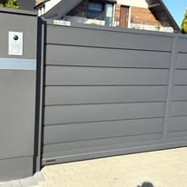

OSC OgrodzeniaKlasyczne i nowoczesne ogrodzenia

Wybrane zdjęcia z publicznych materiałów OSC na Facebooku: ogrodzenia posesyjne, gotowe fronty i prace montażowe.
Galeria pokazuje materiały publicznie dostępne na profilu firmy. Opisy trzymają się tego, co widać na zdjęciach: ogrodzenia, bramy, detale i prace montażowe.




Nowe ogrodzenie potrafi całkowicie zmienić wygląd frontu posesji. Przesuń suwak i zobacz efekt modernizacji.
Ujęcie „przed” pokazuje wizualizację stanu posesji przed wymianą ogrodzenia. Nie opisujemy go jako potwierdzonego zdjęcia sprzed tej konkretnej realizacji.


Opisz dom lub wjazd. Jeśli masz zdjęcie, dołączysz je później w wiadomości e-mail.